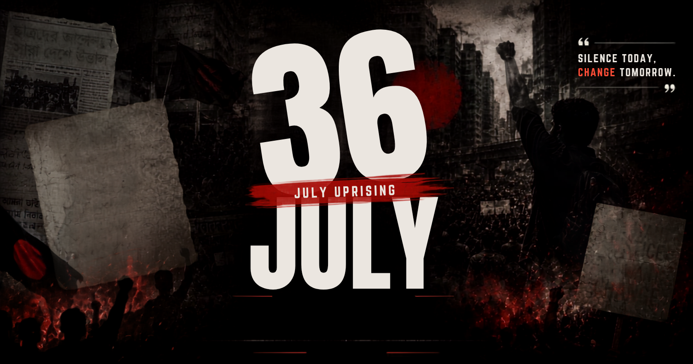

ISTIACK'S JULY CORNER
বাংলায় পড়ুন
বাংলায় পড়ুন
Print Article

Share Link
Download / Print
Select Print Language / প্রিন্ট ভাষা নির্বাচন করুন
Print in English
Renders the English layout copy of this article
শুধুমাত্র বাংলায় প্রিন্ট করুন
নিবন্ধটির বাংলা সংস্করণ প্রিন্ট করুন
Print Both / উভয়ই প্রিন্ট করুন
Appends both language templates on paper consecutively
Cancel / বাতিল
Notification message goes here
 ISTIACK'S JULY CORNER
ISTIACK'S JULY CORNER